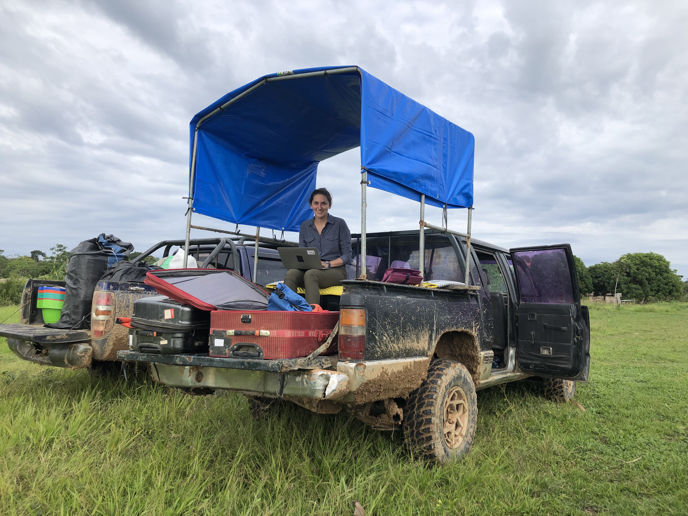

I am currently a Postdoctoral Associate in the MIT Department of Brain and Cognitive Sciences, working with Josh McDermott. I received my PhD in Speech and Hearing Bioscience and Technology from Harvard University in 2021. During my PhD, I was funded by a National Institutes of Health F31 grant and by the NSF Graduate Research Fellowship Program. I have received the Weintraub Graduate Student Award from Fred Hutch and was named to the 2022 Forbes "30 Under 30" list in science. As a Churchill Scholar, I completed my MPhil at the University of Cambridge Centre for Music and Science. I hold a Bachelor's degree in Cognitive Science from Johns Hopkins University. This Fall, I will be joining the UC San Diego Vision and Memory Lab as a Postdoctoral Associate.
I am currently a Postdoctoral Associate in the MIT Department of Brain and Cognitive Sciences, working with Josh McDermott. I received my PhD in Speech and Hearing Bioscience and Technology from Harvard University in 2021. During my PhD, I was funded by a National Institutes of Health F31 grant and by the NSF Graduate Research Fellowship Program. I have received the Weintraub Graduate Student Award from Fred Hutch and was named to the 2022 Forbes "30 Under 30" list in science. As a Churchill Scholar, I completed my MPhil at the University of Cambridge Centre for Music and Science. I hold a Bachelor's degree in Cognitive Science from Johns Hopkins University. This Fall, I will be joining the UC San Diego Vision and Memory Lab as a Postdoctoral Associate.
I study how people perceive and remember sound. I am particularly interested in how experience and culture shape our perception of sounds such as music and speech.
My doctoral research focused on how listeners perceive harmonic sounds -- sounds said to have 'pitch'. I found that listeners use different, context-dependent representations to make judgments about harmonic sounds. For example, representations used to remember harmonic sounds differ in format from those used for real-time discrimination of such sounds, and listeners likewise appear to rely on different representations in noisy versus quiet environments. I also conduct cross-cultural research. A recent project examined the universality of musical consonance and dissonance perception and preference in the Tsimane', an indigenous population in Bolivia.

Outside the lab, I can be found sculling on the nearest body of water, exploring local cycling routes, or playing viola. And occasionally I can't be found at all because I am backpacking somewhere with no cell service.
Pronouns: she/her/hers
Name Pronunciation: muh-LIN-duh mick-FUR-son
This website is still under construction.